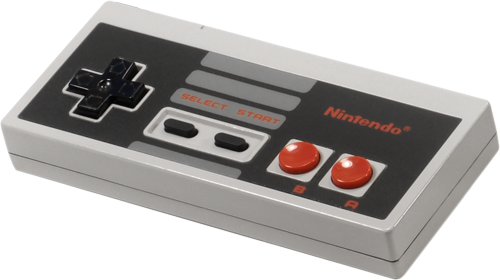
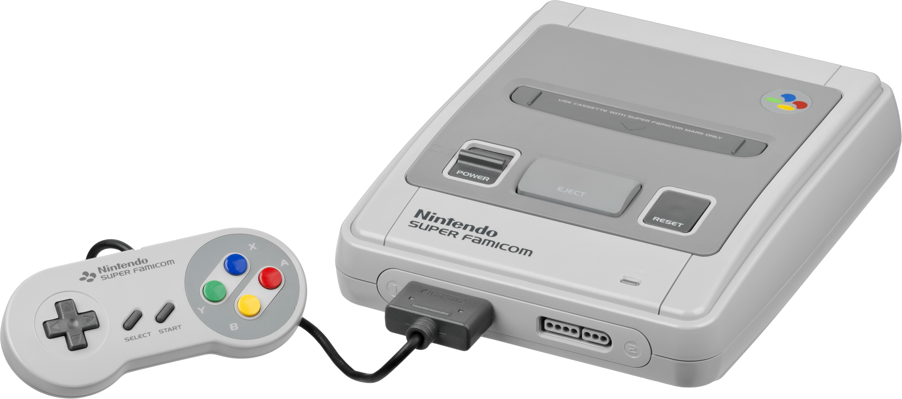
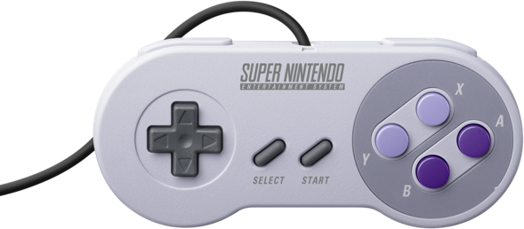
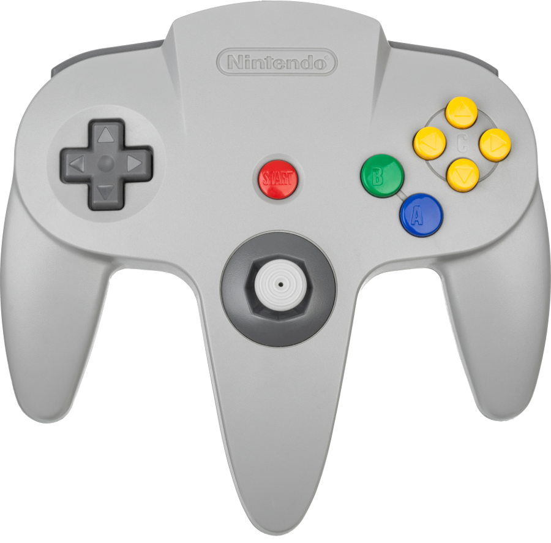
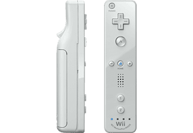
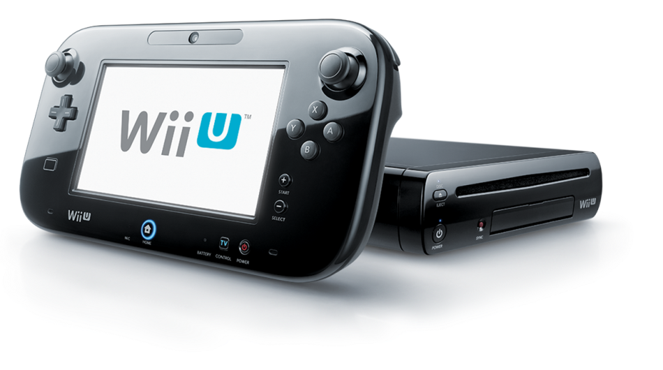
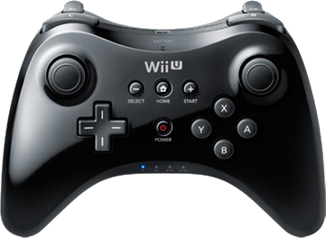
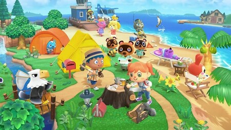
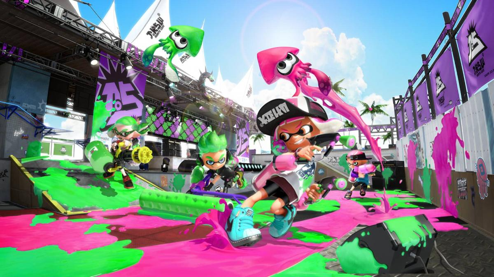

Historia
El origen de Nintendo empezó como fabrica de naipes japonesas, Hanafuda (flor), en Kyoto, Japón, en el año 1889 de la mano de Fusajiro Yamauchi. En 1902, debido a la popularidad de los naipes, funda la asociación Yamauchi Nintendo Co. Ltd, para más adelante empezar a hacer juegos pero manteniendo la producción de cartas, no sin antes, nombrar presidente a Hiroshi Yamauchi, bisnieto del mismo, en el que presodió más de 50 años, desde 1950 hasta 2002.
En el año 1979, Minoru Arakawa (yerno de Hiroshi Yamauchi), inaugura Nintendo of America en la ciudad de Nueva York, haciendo que sea más fácil distribuir sus productos fuera del país nipón.
Consolas
| Año | Nombre | Consolas | Mando |
|---|---|---|---|
| 1977-1983 | Color TV Game |  |
 |
| 1980-1995 | Game & Watch |  |
|
| 1983-1995 | NES |  |
 |
| 1988-1998 | Game Boy |  |
|
| 1990-2000 | SNES |  |  |
| 1995-1996 | Virtual boy |  |
 |
| 1996-2003 | Nintendo 64 |  |
 |
| 1998-2004 | Game Boy Color |  |
|
| 2001-2008 | Nintendo GameCube |  |
 |
| 2001-2008 | Game Boy Advance |  |
|
| 2004-2011 | Nintendo DS |  |
|
| 2006-2012 | Wii |  |
 |
| 2011-2017 | Nintendo 3DS |  |
|
| 2012-2016 | Wii U |  |  |
| 2017-X | Nintendo Switch |  |
 |
Franquicias
| Nombre | Imagen | Año | Descripción |
|---|---|---|---|
| Donkey Kong |  |
1981 |
Empezó en las máquinas arcades de Japón por el 1981 siendo el villano de Mario y, debido a su popularidad, Nintendo lo llevó a las consolas siendo el protagonista de sus propios juegos. Su genero es el de Plataformas 2D. |
| Super Mario |  |
1985 |
Empezó en las máquinas arcade de Japón como personaje jugable en Donkey Kong salvando a Pauline; y, a su vez, como fontanero matando a los enemigos que salían de las tuberías. La mayoría de sus títulos se basan en salvar a la Princesa Peach de manos de Bowser, el villano principal. Sus géneros son el de Plataformas 2D y 3D. |
| The Legend of Zelda |  |
1986 |
Su trama por lo general describe las heroicas aventuras del joven guerrero Link, que debe enfrentarse a peligros y resolver acertijos para ayudar a la Princesa Zelda a derrotar a Ganondorf y salvar su hogar, el reino de Hyrule. Su genero es el de acción-aventura. |
| Metroid |  |
1986 |
Metroid narra las misiones de la cazarrecompensas Samus Aran, quien trata de proteger a la galaxia de los Piratas Espaciales y sus intentos de aprovechar el poder de las criaturas «Metroid», una raza de organismos depredadores que tienen la habilidad de obtener la energía de diversos seres vivos. Sus géneros son el de acción-aventura y plataformas 2D y 3D. |
| Kirby |  |
1992 |
La mayoría de sus juegos tratan sobre las aventuras de Kirby, una bola rosa con el poder de absorber las habilidades de sus enemigos, de salvar su mundo, Dream Land, de varios antagonístas como Rey Dedede, el governante de su mundo. Sus géneros son el de acción y plataformas 2D. |
| Mario Kart |  |
1992 |
Es una serie de videojuegos de carreras como Spin-Offs de la serie de Super Mario en el que cuenta con la aparición de varios personajes de Nintendo como Mario, Link, Aldeano, entre otros. |
| Pokémon |  |
1996 |
La mayoría de sus juegos tratan sobre la aventura del protagonísta de dicha Región, en el que su misión es la de ser el mejor entrenador de la Región; para conseguirlo, deberá derrotar a los Líderes de Gimnasio, y recolectar sus 8 medallas de Gimnasio, no sin antes entrometerte en los planes del equipo villano de turno. Su genero es el de RPG por turnos. |
| Super Smash Bros |  |
1999 |
Es una serie de videojuegos de lucha en 2D, el cual presenta personajes invitados de franquicias de Nintendo, como Mario, Link y Pikachu, y otras compañías, como Sonic, Steve (Minecraft) y Sora, entre otros. |
| Animal Crossing |  | 2001 |
Es una serie de videojuegos de simulación de vida en el que el jugador vive en un pueblo habitado por animales antropomórficos. La serie destaca por su sistema de juego abierto y su amplio uso de reloj y calendario interno en el sistema para simular el paso real del tiempo. |
| Splatoon |  | 2015 |
El título, orientado al multijugador masivo en línea de 5 vs 5, está protagonizado por los Inkling y Octoling, unos personajes humanoides que pueden transformarse en cefalópodos y portan armas con tinta como munición. En este juego no gana quien mate más, sino quien haya pintado más el terreno. Su genero es el de disparos en tercera persona. |